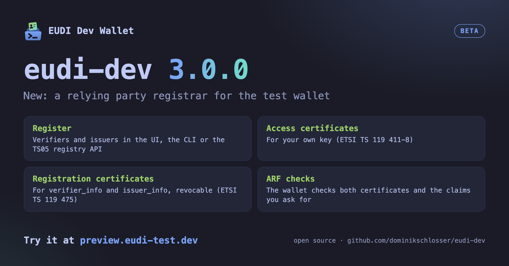

Version 3.0.0 adds a relying party registrar. Register your verifier or issuer, get its certificates and let the wallet check them the way the ARF describes.
verifier_info and issuer_info. The registrar can revoke them.--arf the wallet checks both certificates and whether a verifier asks for more than it registered.Try the beta at preview.eudi-test.dev. The changelog lists everything new. Please report problems on GitHub.